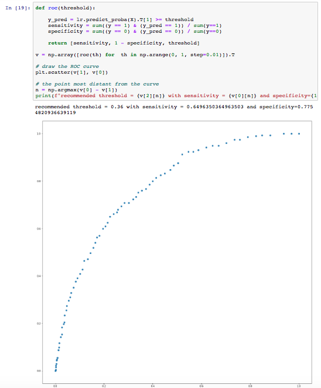
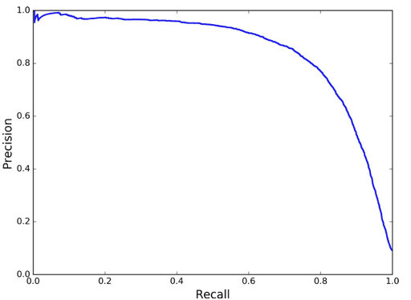
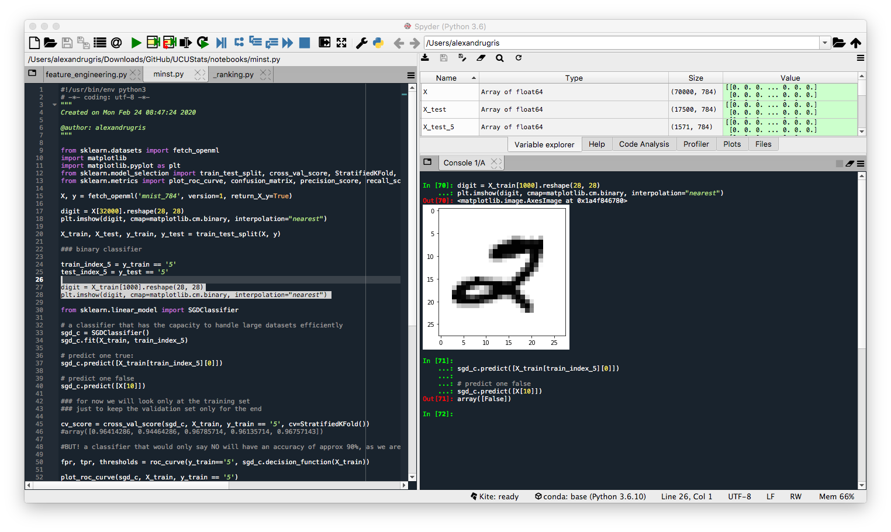
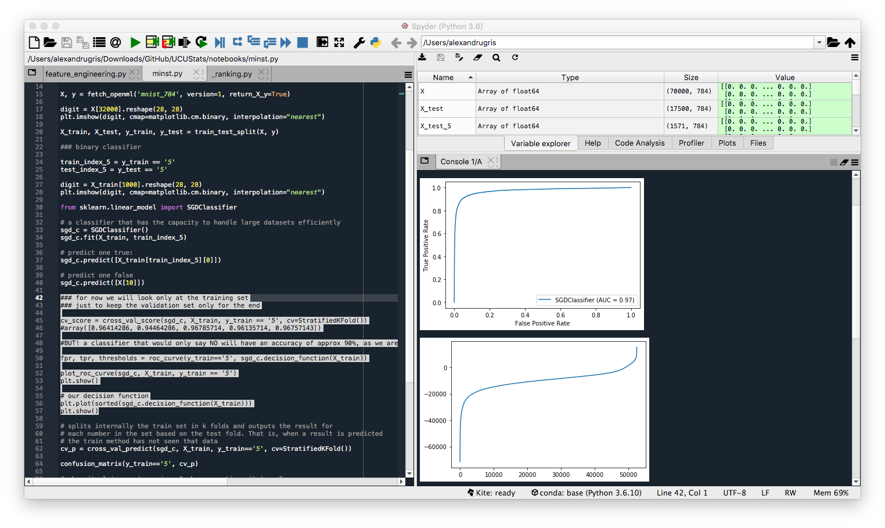
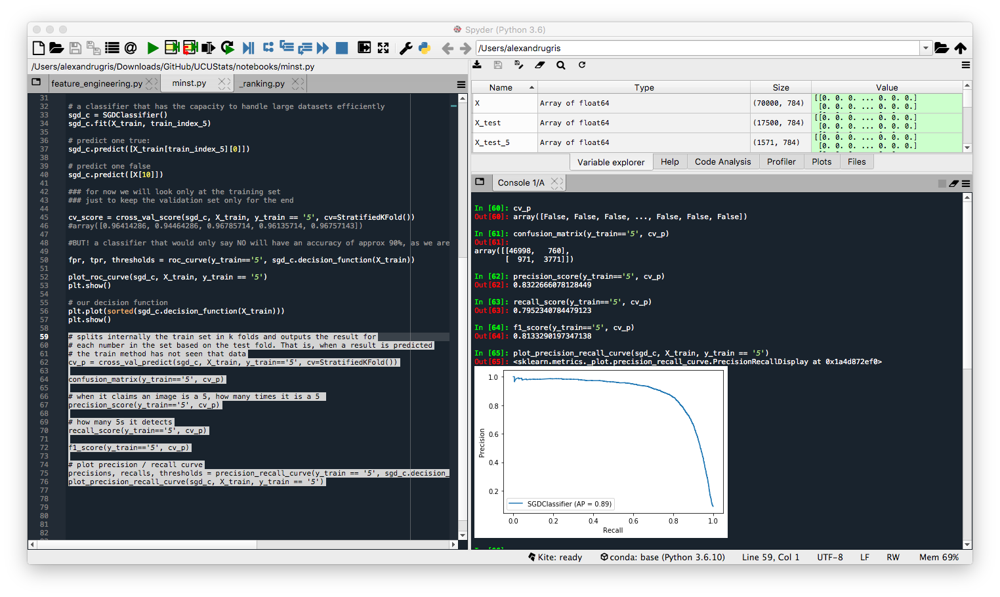

Classification
A post about classification and metrics used for validating classification models.
Confusion matrix
A matrix made of:
- true positives: my test says spam and the email is spam (tp)
- false positives (type 1 error): my test says spam but the email is not spam (fp)
- false negatives (type 2 error): my test says not spam but the email is spam (fn)
- true negatives: my test says not spam and the email is not spam (tn)
For the rest of the article, let's consider a classifier that has the following confusion matrix: tp = 10, fp = 100, fn = 1000, tn = 10000. This is an example of an imbalanced dataset (tp + fn = 10 + 1000 << fp + tn = 100 + 10000).
Accuracy
The percent of classes classified correctly.
```python
def accuracy(tp, fp, fn, tn):
return (tp + tn) / (tp + fp + fn + tn)
accuracy(10, 100, 1000, 10000)
Out[1]: 0.900990099009901
Very high, but obviously the test is bad, as we will see with the following three metrics. The results are completely biased by the true negatives. An example of such a bad test with high accuracy could be 'you are CEO if your name is Jack'. Obviously, there are a lot of Jacks who are not CEOs.
### Precision
How accurate our positive predictions are. The percent of predicted 1s that are actually 1s.
```python
def precision(tp, fp, fn, tn):
return tp / (tp + fp)
precision(10, 100, 1000, 10000)
Out[2]: 0.09090909090909091
Obviously, accuracy is less than 1%.
Recall or Sensitivity
The percentage of 1s that the model correctly classified.
def recall(tp, fp, fn, tn):
return tp / (tp + fn)
recall (10, 100, 1000, 10000)
Out[3]: 0.009900990099009901
Again, not such a good score.
F1 score
The harmonic average between the recall and precision scores. The harmonic average is a good choice because it gets a score closer to the lowest result.
def f1_score(tp, fp, fn, tn):
return 2 / (1/precision(tp, fp, fn, tn) + 1/recall(tp, fp, fn, tn))
f1_score(10, 100, 1000, 10000)
Out[5]: 0.017857142857142856
Specificity
The percentage of 0s correctly classified.
def specificity(tp, fp, fn, tn):
return tn / (tn + fn)
specificity(10, 100, 1000, 10000)
Out[181]: 0.9090909090909091
ROC and AUROC (AUC)
The ROC curve captures the tradeoff between specificity and recall (sensitivity). Its axes are X:(1-specificity) and Y: sensitivity. It is drawn by varying the lambda classification threshold for a specific model. It is used to select such a threshold that gives the best ratio of sensitivity and specificity, which is given by choosing a lambda as close as possible to the top - left corner of the chart.
Below an example of plotting the ROC curve and setting the lambda parameter for a logistic regression.
from sklearn.linear_model import LogisticRegression
lr = LogisticRegression()
lr.fit(X, y)
# our lambda parameter
threshold = 0.5
# ...[0] is probability of not `0`
y_pred = lr.predict_proba(X).T[0] < threshold
sensitivity = sum((y == 1) & (y_pred == 1)) / sum(y==1)
specificity = sum((y == 0) & (y_pred == 0)) / sum(y==0)
print(f"Sensitivity: {sensitivity}")
print(f"Specificity: {specificity}")
print(f"Predicted no, actual no: {sum((y==0) & (y_pred==0))}")
print(f"Predicted no, actual yes: {sum((y==1) & (y_pred==0))}")
print(f"Predicted yes, actual no: {sum((y==0) & (y_pred==1))}")
print(f"Predicted yes, actual yes: {sum((y==1) & (y_pred==1))}")
Now, let's vary the threshold and plot the ROC curve.
def roc(threshold):
y_pred = lr.predict_proba(X).T[1] >= threshold
sensitivity = sum((y == 1) & (y_pred == 1)) / sum(y==1)
specificity = sum((y == 0) & (y_pred == 0)) / sum(y==0)
return [sensitivity, 1 - specificity, threshold]
v = np.array([roc(th) for th in np.arange(0, 1, step=0.01)]).T
# draw the ROC curve
plt.scatter(v[1], v[0])
# the point most distant from the curve
n = np.argmax(v[0] - v[1])
print(f"recommended threshold = {v[2][n]} with sensitivity = {v[0][n]} and specificity={1-v[1][n]}")

The AUC (area under the curve) or, in our case, better said AUROC (area under the ROC), is a measure of how good the classifier is. The larger the area, the better the classifier. In our case above, the classifier is pretty weak to start with.
In addition to the ROC curves, it can be very useful to examine the precision-recall curve (PR-curve). These are especially useful for imbalanced outcomes. Below is an example for the precision / recall curve:

In the example above, precision starts to fall sharply around 80% recall. In this case, we probably want to select a precision/recall tradeoff just before that drop for example, at around 60% recall. A good classifier has a PR-curve which gets closer to the top-right corner.
The Imbalanced Dataset Problem
Imbalanced datasets can lead to a very poor classifier because the underrepresented class might simply be rejected as noise in the training step.
Some ways to deal with imbalanced data are described below:
- Undersample - use less of the prevalent class to train the model
- Oversample - use more of the rare class records to rain the model, usually achieved through bootstrapping
- Up/down weight - add weights to the classification data, so that the probability for each class becomes roughly the same
- Data generation - similar to bootstrapping, but each generated record is slightly different from its source. SMOTE is an algorithm that generates a new record for the record being up-sampled by using the K-nearest neighbors and assigning a randomly selected weight for each feature.
A classification problem could be turned to a regression problem if an numeric expected value is assigned to each classification record. For instance, instead of trying to predict a credit default, we might want to predict the expected return of a given loan.
An Example Of All The Above
We are going to look at the MINST dataset with hand written letters and build a classifier to recognize digit 5. We are going to use all the metrics defined above to evaluate our classifier. We are going to use SKLearn for all the steps.
Importing the functions we are going to use:
from sklearn.datasets import fetch_openml
import matplotlib
import matplotlib.pyplot as plt
from sklearn.model_selection import train_test_split, cross_val_score, StratifiedKFold, cross_val_predict
from sklearn.metrics import plot_roc_curve, confusion_matrix, precision_score, recall_score, f1_score, plot_precision_recall_curve, precision_recall_curve, roc_curve
Reading and inspecting the dataset. After getting the dataset, we will just plot a digit.
X, y = fetch_openml('mnist_784', version=1, return_X_y=True)
digit = X[32000].reshape(28, 28)
plt.imshow(digit, cmap=matplotlib.cm.binary, interpolation="nearest")
Splitting the dataset in train and test. As good ML engineers, we are going to look further only at the train dataset, and leave the test dataset untouched until the last stages of the project.
X_train, X_test, y_train, y_test = train_test_split(X, y)
train_index_5 = y_train == '5'
test_index_5 = y_test == '5'
# observe a digit in the train dataset
digit = X_train[1000].reshape(28, 28)
plt.imshow(digit, cmap=matplotlib.cm.binary, interpolation="nearest")

Train a classifier and predict a positive and a negative case, just for testing purposes. Success.
from sklearn.linear_model import SGDClassifier
# a classifier that has the capacity to handle large datasets efficiently
sgd_c = SGDClassifier()
sgd_c.fit(X_train, train_index_5)
# predict one true:
sgd_c.predict([X_train[train_index_5][0]])
# predict one false
sgd_c.predict([X[10]])
Compute the cross validation score. The results for accuracy seem pretty good. However, this is an imbalanced class, only approx 10% of the digits are 5, which would give a pure False classifier an accuracy of approx 90%. Therefore, the 96% score obtained below is not great.
cv_score = cross_val_score(sgd_c, X_train, y_train == '5', cv=StratifiedKFold())
#array([0.96414286, 0.94464286, 0.96785714, 0.96135714, 0.96757143])
Now we are going to look at the ROC curve and the Precision Recall curve and compare the two. We will look also at the classification metrics.
The ROC curve first:
# to get the false positive and true positive rates together with the thresholds for each
# and analyze them programmatically, use the following method.
# This will allow the programmer to pick the desired threshold for the classifier
fpr, tpr, thresholds = roc_curve(y_train=='5', sgd_c.decision_function(X_train))
# Plot the curve and compute the AUC
plot_roc_curve(sgd_c, X_train, y_train == '5')
plt.show()
# We can also plot our decision function
plt.plot(sorted(sgd_c.decision_function(X_train)))
plt.show()
The curve looks quite steep, which gives the impression of a good classifier.

But when we do the same with the precision-recall curve, we see the results are less outstanding. That is because we have a minority class we want to classify and the PR-curve is better suited for it. But before that, let's look at the cross_val_predict function and then compute the classification metrics described at the beginning of this article.
# splits internally the train set in k folds and outputs the result for
# each number in the set based on the test fold. That is, when a result is predicted
# the train method has not seen that data
cv_p = cross_val_predict(sgd_c, X_train, y_train=='5', cv=StratifiedKFold())
# the confusion matrix
confusion_matrix(y_train=='5', cv_p)
# when it claims an image is a 5, how many times it is a 5
precision_score(y_train=='5', cv_p)
# how many 5s it detects
recall_score(y_train=='5', cv_p)
# the f1 score
f1_score(y_train=='5', cv_p)
And finally the precision recall curve and, similarly to the ROC curve, the function to programmatically access the precisions and recalls for each threshold allowing for a manual selection of the classifier decision boundary.
# plot precision / recall curve
precisions, recalls, thresholds = precision_recall_curve(y_train == '5', sgd_c.decision_function(X_train))
plot_precision_recall_curve(sgd_c, X_train, y_train == '5')
The not so steep Precision-Recall curve:
